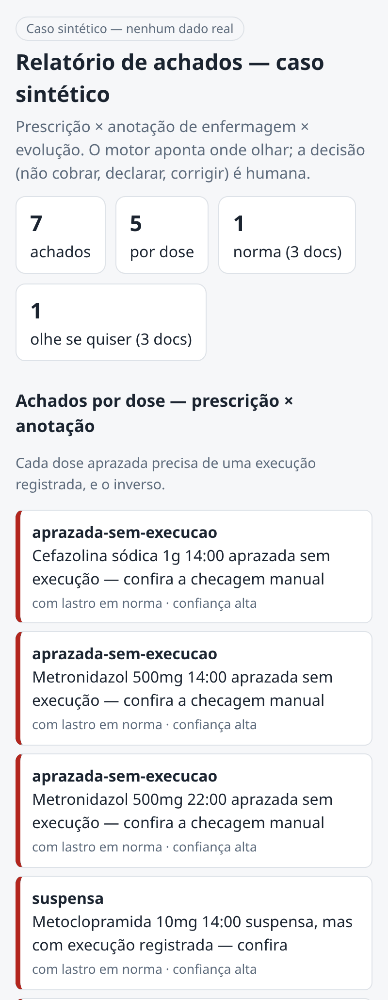

O Tria em vídeo
Da foto ao relatório, em menos de um minuto
Três fotos pelo celular, a leitura e os achados, cada um com a razão. As telas e o relatório são do app real, com documentos fictícios.
O problema
Glosa: quando o convênio nega ou retém o pagamento
Muitas glosas não questionam o cuidado prestado, e sim o registro. O que foi prescrito, o que a enfermagem anotou e o que foi evoluído precisam contar a mesma história. Quando não contam, a conta volta.
em serviços prestados e não pagos em 2024, numa pesquisa com hospitais privados associados à Anahp.
foi a glosa média nesses hospitais em 2024. Mesmo quando cai no recurso, o dinheiro fica parado de 4 a 24 meses.
do valor glosado era de glosa administrativa, não técnica, em dois hospitais privados estudados.
Fontes: Balanço Observatório Anahp, abril de 2025 · Truzzi et al., Enfermagem Brasil, 2022.
Hoje, a conferência é manual e contra o relógio. As glosas grandes são vistas; os erros pequenos passam, e o convênio os encontra depois.
Entenda o problema em detalhe →Como funciona
Três passos, no celular
-
1 · Foto
Os três documentos, pelo celular
Prescrição, anotação de enfermagem e evolução. Basta abrir um link: não há nada para instalar.
-
2 · A IA lê
A inteligência artificial só lê
Transforma o papel em fatos, como medicamento e horário. Não decide nada.
-
3 · O código cruza
Regras fixas mostram onde não bate
Os três documentos são comparados e cada achado vem com a razão, para o auditor conferir.

Por que o Tria
Feito para quem trabalha no papel
A IA só lê; o código decide
A leitura é separada da regra. Cada achado traz a razão, para o auditor conferir.
Confere tudo, não uma amostra
Todos os documentos enviados passam pela conferência, inclusive os erros pequenos que a revisão manual não alcança.
Sem sistema, sem TI
Funciona com foto de celular e com o papel que o hospital já tem. Não depende de prontuário eletrônico.
A decisão é do auditor
O Tria aponta onde olhar. Corrigir, deixar de cobrar ou declarar continua sendo decisão de quem audita.
Privacidade e limites
O que o Tria faz com os documentos
-
Não guarda os documentos. A imagem é enviada a um provedor de inteligência artificial só para a leitura.
-
Documento sem identificação do paciente. Antes da foto, cubra nome, leito e número do prontuário.
-
Linha ilegível não vira chute. O Tria avisa para conferir no papel.
-
Hoje, medicação. É por onde o Tria começa; outros itens da conta vêm depois.
Onde estamos
Em validação, buscando os primeiros hospitais
Hoje
- App no ar, acessado por link
- Funciona com o papel que o hospital já tem
- Testado até agora só em casos sintéticos
Próximos passos
- Testes reais com gestores e auditoria
- Validação técnica com um profissional auditor
- Primeiras instituições no uso gratuito e limitado
Teste o Tria
Trabalha com auditoria, faturamento ou gestão em hospital que atende convênio?
Teste o Tria de graça com documentos do seu hospital, sem identificação do paciente. Me chame no WhatsApp e eu envio o seu link de acesso.
Falar comigo no WhatsAppUso gratuito e limitado, sem compromisso.
Pedro Gomes Sampaio, fundador do Tria